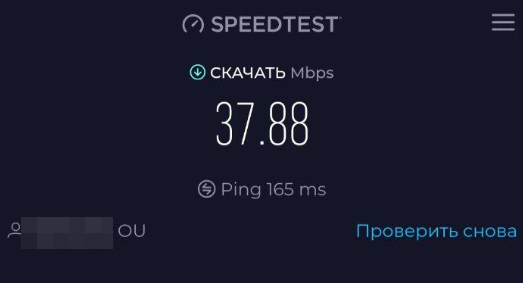

| Ник | Пост | Дата |
|---|---|---|
| ann | Всем доброго дня! Выхожу из ридонли, чтобы обсудить одну интересную вещь. [дисклеймер: сразу говорю, что название конторы и/или какие-либо ссылки я давать не буду без согласования с модераторами/админстраторами, поэтому пока что только теоретизируем…] Собственно, волки. в теории, весь трафик в гостевой сети между абонентским устройством (UE) и базовой станцией надёжно зашифрован LTE, ключами (KI/OPc) которые парно хранятся на чипе SIM-карты и нашем HSS, то есть расшифруем мы его уже после того, как трафик покинет территорию России. это (опять же, в теории) значит, что никакие технические средства ТСПУ не смогут вмешаться в traffic flow абонента. (на практике, правда, есть нюансы – мобильные устройства обычно не шифруют DNS-запросы, но, вроде бы, в 2025 году завести DoH не есть проблема.) Первые тесты прошли успешно – Youtube, Tor и прочая запрещёнка работает. Какие у вас мысли по этому поводу? Можно ли с разрешения администрации вбросить несколько eSIM-карт с парой гигабайт трафик на тест для желающих? @ValdikSS? | 2024-12-09T13:38:04.322Z |
| hdrover | Конечно с sim-картой, находящейся в РФ в роуминге, местные ограничения не работают, но только стоит это обычно намного дороже VPS (который сейчас хорошо справляются с задачей обхода ограничений). Не нужно ничего проверять, это и так понятно. Как и в обратную сторону, с sim-картой из РФ во всех странах будут работать все блокировки (да и IP будет российский). | 2024-12-09T14:40:56.650Z |
| ann | ну я смотрю на соседнюю тему на отвал всего зарубежного интернета в Дагестане и мне очень интересно, не отключили ли российские ОПСОСы международный роуминг на эту тему, например. | 2024-12-09T14:59:08.647Z |
| ariurn | Почитайте топик про Дагестан. Там писали, что с симкой из другого региона все работало. | 2024-12-09T15:11:54.749Z |
| hdrover | Уже, к сожалению, не проверить, потому что ситуация длилась ровно сутки. Только если кто-то был в Дагестане с иностранной симкой и проверил. Но, если я не ошибаюсь, кто-то писал, что даже симки из других регионов РФ нормально работали в Дагестане в момент блокировки. | 2024-12-09T15:12:20.173Z |
| ann | насколько вообще жизнеспособна идея предлагать в РФ SIM-карты с международным роумингом с орентировочной ценой в 4 евро за гигабайт и возможностью оплаты российскими картами и криптой? понятно, что это дороже, чем VPSка, но может кто-то предпочтёт именно такой способ выхода в сеть? как думаете? | 2024-12-09T15:17:32.014Z |
| Xunlei | Для преварительного анализа спроса создают объявления в интернетах и смотрят как часто обращаются за услугой. | 2024-12-09T15:24:42.714Z |
| hdrover | Это будет актуально только в том случае, если полностью отключат все остальные каналы, когда альтернатив не останется. Сейчас за 5 долларов VPS можно арендовать в Европе с десятками терабайт в месяц. От симок никаких плюсов, а точнее только минусы (даже если про цену забыть). Как минимум, нужен модем. | 2024-12-09T15:25:33.223Z |
| ann | есть небольшая проблема: потенциальные пользователи не знают, что можно купить “иностранную” симку за крипту/российские карты, и выходить с неё в интернет. то есть, спроса по факту нет, но вероятно его можно создать. ну а модем всегда есть в телефоне, как и ESIM. | 2024-12-09T15:32:30.926Z |
| denium | Какой там пинг будет? Вот вопрос. | 2024-12-09T15:38:30.499Z |
| ann |  это из Питера. PGW в Эстонии, SGW/SGSN в Италии, то есть трафик нормально так путешествует. | 2024-12-09T15:40:27.836Z |
| hdrover | Вот только держать постоянно подключенным телефон в режиме модема для доступа с компьютера неудобно. А еще есть умные телевизоры и другая техника (хотя какие телевизоры при 4 евро за гигабайт). И переключать каждый раз симку для данных туда-сюда. А еще у некоторых и так 2 симки одновременно используются. То есть по-хорошему нужен отдельный модем для дома (что в целом не проблема, если других вариантов нет). А еще отдельная симка для основного телефона для улицы. | 2024-12-09T15:49:35.009Z |
| denium |
Как запасной вариант иметь полезно. Главное следить за балансом. | 2024-12-09T15:53:50.495Z |
| ann | ладно, раз никто из администрации не ответил, я просто оставлю здесь 5 eSIM на тест просьба написать: свой регион, своё устройство, зарегистрировалась ли SIM-карта в сети, если да – то в какой, есть ли интернет, и если есть – замерьте скорость и пинг где-нибудь. (на всякий случай, ещё раз – ноль рекламы, just test purposes) | 2024-12-09T20:03:52.798Z |
| Xunlei | А что за eSIM такой и картиночки? Huawei E3372h подключить не получится? | 2024-12-09T20:37:57.894Z |
| Anyuta1166 | Я тут в одной теме уже писала об этом кейсе, повторюсь. Уже есть один пример, когда интернет с зарубежной симки в роуминге в РФ попадает под российские блокировки. Это IZI Казахстан в роуминге в Билайн РФ. Не ясно, как это реализовано технически, и других случаев пока не было, но сам факт того, что даже роуминг может не быть спасением от блокировок, напрягает. | 2024-12-09T20:44:57.425Z |
| dartraiden(Alexander Gavrilov) | Это заморочки конкретно билайна, который фильтрует транзитный трафик. | 2024-12-09T20:55:57.520Z |
| ann | у нас есть физические симки, которые можно воткнуть в хуавей, но это выходит за пределы этой темы и без согласования с администрацией я не буду оставлять ссылку на ресурс, где можно заказать физ. SIM а @ValdikSS молчит, в жабе тоже | 2024-12-09T21:08:24.189Z |
| ann | в таком случае нужно раздать WiFi на компьютер и сделать traceroute до запрещённых ресурсов, чтобы посмотреть, где именно и как фильтрует билайн P.S. роуминг KZ<->RU может быть “скомпрометирован” для взаимного соблюдения блокировок. у нас EE (Эстония). | 2024-12-09T21:09:24.176Z |
| dartraiden(Alexander Gavrilov) | Достаточно взять любой ресурс из реестра РКН, который хостится в датацентре, аплинком которого является билайн. Не знаю, как сейчас, раньше таким ресурсом был lostfilm.tv, размещавшийся в датацентре, у которого одним из аплинков был именно билайн. В итоге, если пользователю не везло и трафик до него на начальном этапе шёл через билайн, пользователь не мог попасть на сайт, даже через Tor/VPN, видя билайновскую заглушку о заблокированном ресурсе. | 2024-12-09T21:11:03.982Z |
| sralinxxx(дмитрий) |
1 симка в списке - полёт нормальный. подключилось к сети мегакала (мегафон рус). инста, твиттер, ntc party грузят, опенвпн воркает. амурская область. iphone xr. (чтоб завелось - в настройках тарифа включите роуминг данных) | 2024-12-10T04:01:03.119Z |
| Anonimno(Anonimno) |
Цeнзуpируемые ресурсы открываются, причём очень шустро, без задержек. Западная Сибирь. Спойлер | 2024-12-10T05:45:27.123Z |
| zaeru5uisr4usi |
НиНо, цепанулась на ифоне отлично, даже предложило 5g (т.е. в мск или спб можно былоб и 5g потестить), сеть Megafon RUS 4G, пинги пол 400 мс, скорость около 22-25 на прием, 10 на отдачу, открылость все (из блокнутого и российские новостые сайты, вк). IPv4only с эстонской AS. | 2024-12-10T05:51:54.641Z |
| andmail |
Pixel 8 | 2024-12-10T06:00:42.419Z |
| idev |
Тамбовская область, подключился к МТС. Pixel 7. UPD Любопытное наблюдение:Через данного эстонского оператора у меня успешно подключился обычный немодифицированный openvpn до московского ДЦ (ТСПУ точно есть, через Франкфурт, к примеру, соединение “морозится” на 4 кБайтах переданного трафика). UPD2 (19:50 msk) | 2024-12-10T07:29:39.612Z |
| idev | Если предположить, что РКН сможет изолировать нас в “рунете” и никакие обходы работать не будут, НО международный роуминг при этом не начнёт фильтроваться, то это будет интересно. Но очень ограниченно. Потому что стоимость трафика несовместима ни с каким медиа-контентом. Это только текстовый доступ, браузеры с отключенным всем кроме текста. | 2024-12-10T17:34:36.261Z |
| sralinxxx(дмитрий) | это скорее запасной вариант, чтобы связаться с внешним миром и найти обход | 2024-12-10T23:48:52.289Z |
{kind=link}
{kind=link}
{kind=link}
{kind=link}
{kind=link}
{kind=link}
{kind=link}
{kind=link}